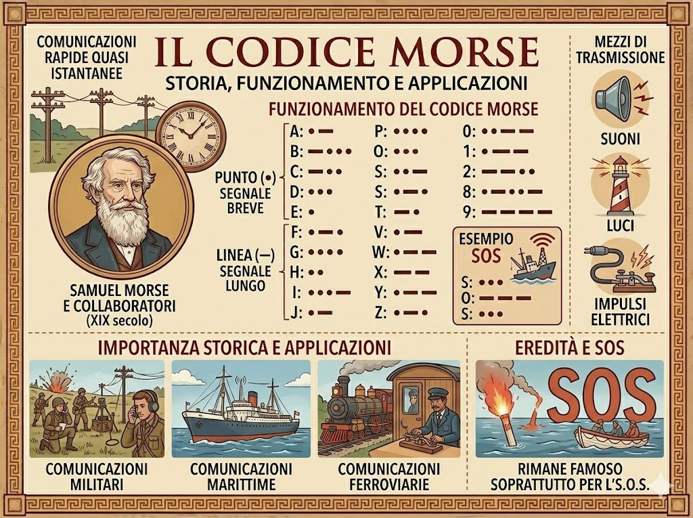
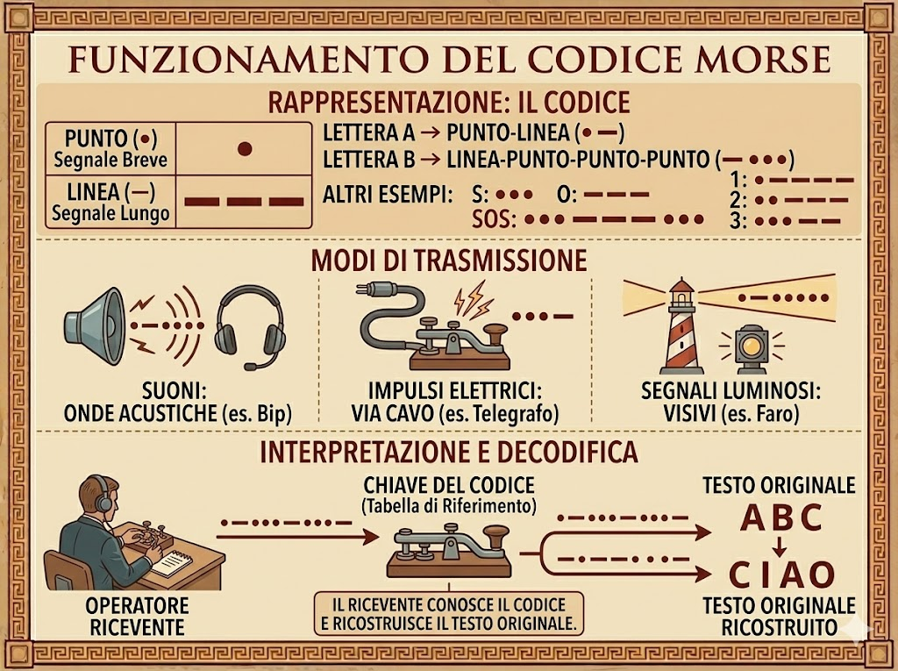
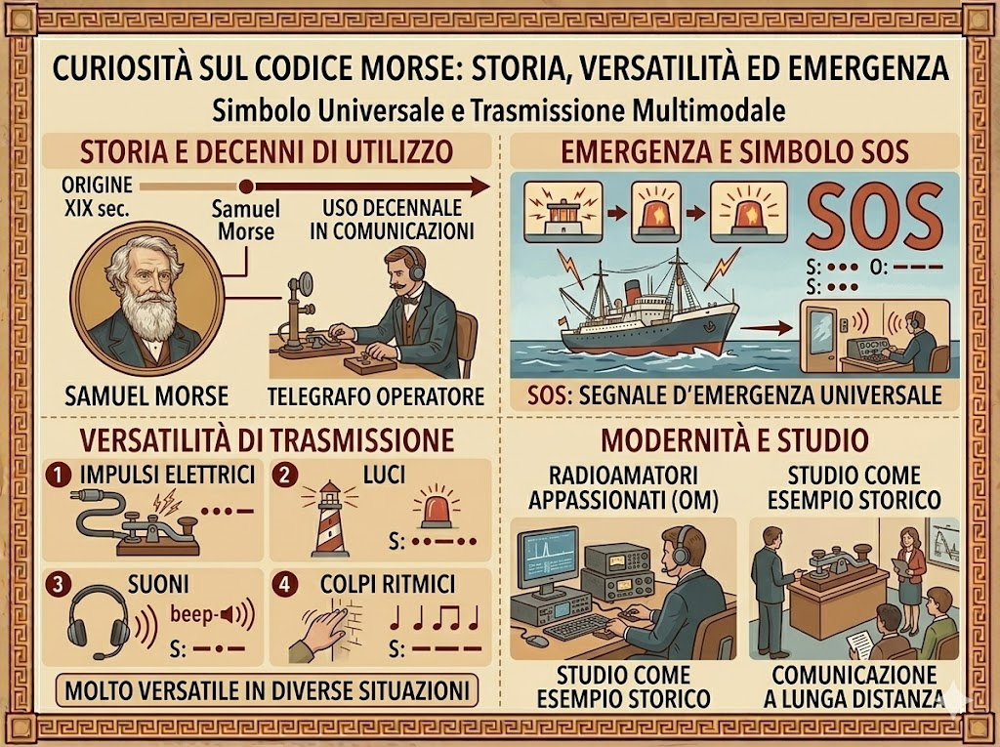

Il Codice Morse è un sistema di comunicazione sviluppato nel XIX secolo per trasmettere messaggi a lunga distanza tramite il telegrafo. Fu ideato da Samuel Morse e dai suoi collaboratori in un periodo in cui le comunicazioni rapide tra città e paesi erano ancora molto difficili. Questo sistema nacque insieme allo sviluppo delle prime linee telegrafiche e permise per la prima volta di inviare informazioni quasi istantaneamente attraverso impulsi elettrici. Il funzionamento del Codice Morse si basa sulla rappresentazione delle lettere dell’alfabeto e dei numeri tramite combinazioni di segnali brevi e lunghi, chiamati punti e linee. Questi segnali possono essere trasmessi con suoni, luci o impulsi elettrici e poi interpretati dal ricevente per ricostruire il messaggio originale. Il Codice Morse ha avuto un ruolo molto importante nella storia delle comunicazioni ed è stato utilizzato per molti anni nelle comunicazioni militari, marittime e ferroviarie. Anche se oggi è stato quasi completamente sostituito da tecnologie più moderne, rimane uno dei sistemi di comunicazione più famosi e riconoscibili, noto soprattutto per il segnale di soccorso SOS.

Il codice morse funziona rappresentando le lettere dell’alfabeto e i numeri tramite combinazioni di segnali brevi e lunghi, chiamati punto e linea. Ogni lettera ha una sequenza specifica: ad esempio la lettera a è rappresentata da punto-linea, mentre la lettera b da linea-punto-punto-punto. Questi segnali possono essere trasmessi in diversi modi, come suoni, impulsi elettrici o segnali luminosi, e chi riceve il messaggio deve conoscere il codice per poter interpretare correttamente la sequenza e ricostruire il testo originale. In questo modo è possibile comunicare anche a grandi distanze usando segnali molto semplici.

Una curiosità del codice morse è che, pur essendo nato nel XIX secolo per il telegrafo, ha continuato a essere usato per decenni nelle comunicazioni marittime e militari, diventando un simbolo universale di emergenza grazie al celebre segnale SOS. È interessante notare che può essere trasmesso non solo con impulsi elettrici, ma anche con luci, suoni o colpi ritmici, il che lo rende molto versatile in situazioni diverse. Oggi, anche se la tecnologia moderna ha quasi completamente sostituito il telegrafo, il codice morse rimane conosciuto dagli appassionati di radio e viene ancora studiato come esempio storico di comunicazione a lunga distanza.
